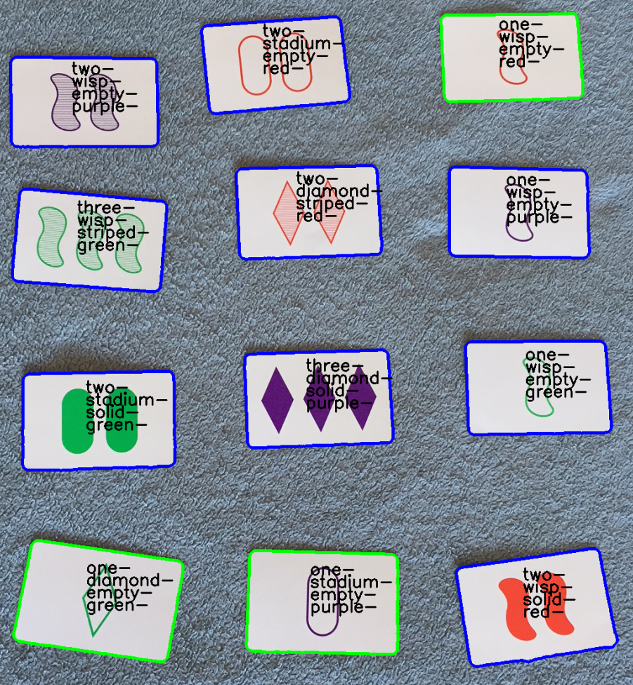

Card Shark
What is Card Shark?
Card Shark is an computer vision program that recognizes card and highlights the optimal moves to play. In particular, it's the world's best SET player!
What is SET?
Set is a card game in which 12 cards are laid out, and each player has to pick out sets of 3 cards that follow specific patterns. Each card is identified by combination of 4 features: shape, color, and fill, and count. A set is formed, when each feature is either the same across all three cards, or unqiue across all three cards.
How it works?
- The application captures a frame, either from a saved image or live video from a webcam.
- The frames is searched for contours, and then the collection of contours is searched for card-like shapes, based on size/shape/etc.
- Each Card is then projected into a standard rectangle of known dimensions.
- The card is then analyzed to determine all of the card's attributes: [Shape, Color, Count, Fill] And Card objects are created to match each of the card images.
- The rules of set are applied, finding all showing sets.
- Graphics overlays are generated, outline all identified cards, with text to show the attributes.
- Finally, one of the sets is selected and highlighted with another color.